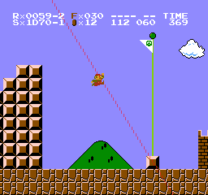

Common Notation
Position String
The position string is used to precisely keep track of Mario's position as he is moving. On the practice ROM, it it located to the right of Sx. It consists of 4 hexadecimal digits and a constant 0 digit in the format ABC0-D.
Digits B and C

The B and C digits describe where Mario is horizontally. Assuming Mario is moving at max speed down and right, the pixel and subpixel he will be at once he reaches the bottom of the screen are the B and C digits respectively. This means that B and C stay constant while Mario is falling and moving right.
Digit A
While moving at max speed, Mario's subpixel alternates between two values. Digit A is used to differentiate which set of subpixels Mario is switching between.
Digit A can range from 0 to 4 and is constant while running to the right. When combined with the 8 pairs C can have while moving, all 40 speed values can be represented. Losing 8 subpixels will decrease A by 1.
Digit D
Digit D is the last 2 bits of Mario's vertical pixel. This is equivalent to his vertical pixel modulo 4, so D can range from 0 to 3.
This is used to represent the vertical offset within a position string, since 4 pixels vertically have the same A, B, and C values.
Abbreviation Dictionary
| Abbreviation | Definition |
|---|---|
| BBBB | Bonk, Brush, Boing, Bounce |
| BBFPG | Bullet Bill Flagpole Glitch |
| BBG | Bullet Bill Glitch |
| DFA | Double Fast Accel |
| FA | Fast Accel |
| FFPG | Full Flagpole Glitch |
| FFA | Falling Fast Accel |
| FPG | Flagpole Glitch |
| FR | Framerule |
| L4-2 | Lightning 4-2 |
| RFA | Reverse Fast Accel |
| TFA | Triple Fast Accel (Abbreviation is also used to refer to TAS accel) |
| WJ | Wall Jump |